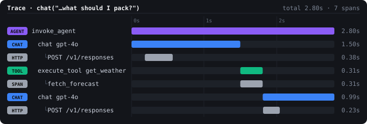

Monitoring chatlas apps with OpenTelemetry
Your chatbot works on your machine. Then it ships, and:
This is what OpenTelemetry (OTel) is for.
chatlas is instrumented with OTel out of the box – no tracing code to write yourself, just choose where to send the data.A single chat() that calls a tool produces a trace shaped like this:
invoke_agent # wraps the full chat loop
├── chat gpt-4o # each model API call
├── execute_tool get_weather # each tool invocation
├── chat gpt-4o # follow-up model call
└── ...from opentelemetry import trace
from opentelemetry.sdk.trace import TracerProvider
from opentelemetry.sdk.trace.export import ConsoleSpanExporter, SimpleSpanProcessor
provider = TracerProvider()
provider.add_span_processor(SimpleSpanProcessor(ConsoleSpanExporter()))
trace.set_tracer_provider(provider)chatlas now emits spans for every chat(), stream(), and tool call.travel_assistant.py
from opentelemetry import trace
from opentelemetry.instrumentation.httpx import HTTPXClientInstrumentor
from chatlas import ChatBedrockAnthropic
HTTPXClientInstrumentor().instrument() # nests the HTTP call under `chat`
tracer = trace.get_tracer("travel_assistant")
def get_weather(city: str) -> str:
"Get the current weather forecast for a city."
with tracer.start_as_current_span("fetch_forecast"):
return f"{city}: 14°C, light rain, breezy this weekend."
chat = ChatBedrockAnthropic(
system_prompt="Always call get_weather before advising what to pack."
)
chat.register_tool(get_weather)
chat.chat("I'm headed to Tokyo this weekend — what should I pack?")
fetch_forecast nested inside execute_tool), and a follow-up model call answers.httpx instrumentation and you’d still get invoke_agent, chat, and execute_tool – just without the HTTP detail.| Span | Captures |
|---|---|
| invoke_agent – the whole chat loop | Provider, requested model |
| chat – one per model call | Provider/model, token usage, response id |
| execute_tool – one per tool call | Tool name, description, call id, errors |
gen_ai.*) – the same names other GenAI-instrumented libraries use.app.py
chatlas creates any chats – a dedicated module you import first guarantees that.chatlas’s spans describe the shape of a conversation. To see inside each step – raw HTTP, retries, full payloads – add a lower-level instrumentor:
| Level | Example | Tradeoff |
|---|---|---|
| Transport | httpx instrumentation |
Works with every provider; generic HTTP spans only |
| SDK, model-agnostic | OpenLLMetry | GenAI-aware spans across many providers |
| Official, per-provider | e.g. opentelemetry-instrumentation-anthropic |
Most detail; one package per SDK |
httpx (you just saw it) – reach for the others only if you need GenAI-specific attributes chatlas doesn’t already give you.~15 minutes — pick your adventure:
Start from the exercise file:
ToolResultDisplayTake your working chatbot and:
Exercise file: exercises/02-shinychat-starter.py